Tutoriel d'utilisation de Tabliato
- Tabliato et Lilypond
- Écrire les notes
- Écrire les basses
- Clé, armure, mesure, tempo
- Silences
- Répétitions
- Changement de ligne
- Fins alternatives
- Mesure incomplète, anacrouse
- Liaisons
- Aller plus loin
Tabliato repose sur Lilypond
Tabliato repose sur le logiciel libre Lilypond. Tabliato réalise les analyses spécifiques à l'accordéon alors que Lilypond se charge de produire un résultat visuel (image ou pdf). Ainsi l'essentiel de la syntaxe musicale de Lilypond reste valable dans Tabliato. Ce manuel décrit la syntaxe spécifique de Tabliato et les bases utiles de Lilypond.
Si vous connaissez déjà Lilypond seuls les paragraphes 2, 3 et 4 seront pertinents. Veuillez tout de même lire les notes oranges dans les autres paragraphes.
Écrire les notes
Rien de plus simple. Pour écrire une note il suffit d'écrire son numéro suivi d'une apostrophe « ' » si c'est un bouton de la seconde rangée.
Pour indiquer si cette note est poussée ou tirée on ajoute un « p » ou un « t » devant la note. Exemple :
p5'
Il n'est pas besoin de le répéter à chaque fois. Tant qu'on joue dans le même sens la lettre s'applique aux autres notes. Exemple :
p5 4' 5 6 t7 7' 8 7
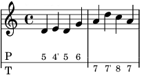
De plus la syntaxe est très permissive. Vous pouvez mettre une minuscule, une majuscule, une espace ou non. Les syntaxes suivantes sont valides et strictement identiques :
p5 4 3 p5 p4 p3 P 5 4 3 P5 4 p3 p 5 4 3
Enfin il faut spécifier si la note est une ronde, une blanche, une noire ou une croche, etc. (c'est le minimum requis de solfège). Dans les conventions de solfège une ronde est notée 1, une blanche 2, une noire 4, une croche 8, etc. Il suffit d'ajouter le symbole « : » suivi de la valeur. De même il n'est pas besoin de répéter cette valeur tant qu'elle ne change pas. Exemple :
p5:16 4' 5 6 t7:4 7' 8:8 7
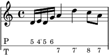
Pour les notes pointées, il suffit d'ajouter un point à la valeur du temps. Exemple :
p5':4.
Écrire les basses
Rien de plus simple. Pour écrire les basses il suffit d'écrire les lettres des accords (nomenclature anglaise couramment utilisée en accordéon) dans le champ dédié. Exemple :
Tablature
p5 4' 5 6 t7 7' 8 |
Basses
C c E e A a A a |
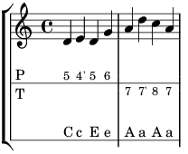
Vous devez par ailleurs indiquer la durée des basses dans la liste déroulante « basses » du menu de gauche.
Clé, armure, mesure, tempo
Tout est géré par Tabliato dans l'interface graphique. Indiquez grâce aux listes déroulantes les options de votre partition.
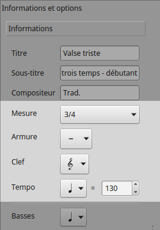
Silences
Les silences s'écrivent « r » suivi de la durée, notifiée sur le même principe que les notes.
r1 r2 r4 r8 r16 r32 r64 r128
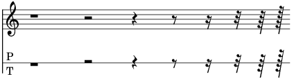
Il s'agit d'un cas particulier où il n'est pas nécessaire d'écrire la durée avec « : ». Cependant la syntaxe suivante est tout aussi correcte :
r:1 r:2 r:4 r:8 r:16 r:32 r:64 r:128
Les répétitions
Les répétitions s'indiquent avec le mot clé « \repeat volta » suivi du nombre de répétitions :
\repeat volta:2
{
p5 4' 5 6 t7 7' 8 7
}
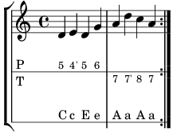
Dans ce cas le logiciel ajoutera une ou deux barres de répétition comme les conventions l'exigent. Attention si vous mettez des répétitions à des endroits musicalement incohérents cela ne marchera pas. Ce n'est pas un logiciel de dessins de partition, mais un analyseur syntaxique qui traite de la musique avec les règles strictes du solfège.
Attention ! Les utilisateurs de Lilypond remarqueront la nécessité d'écrire le nombre de répétitions avec le symbole « : » et sans espace. Cette différence est due au fait que dans Tabliato un chiffre correspond à une note. Dès lors la syntaxe classique « \repeat voltat n » est mal interprétée.
Les fins alternatives
Une fin alternative s'écrit comme suit : on indique qu'il va y avoir une répétition puis on omet la dernière mesure que l'on place dans \alternative. S'il y a trois répétitions on peut bien sûr mettre trois alternatives. Attention à bien ajouter des espaces à l'intérieur des crochets.
Tablature
\repeat volta:2
{
p5:4 4' 5 6
t7 7' 8 7
}
\alternative
{
{ t4 5 5' p4 }
{ t4 5 5':2 }
}
|
Basses
\repeat volta:2
{
C c E e
A a A a
}
\alternative
{
{ C c E e }
{ C c E e }
}
|
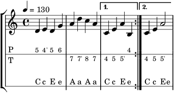
Les sauts de ligne
Si la mise en page automatique ne vous convient pas, vous pouvez forcer un retour à la ligne en ajoutant le mot \break. Dans ce cas la ligne va occuper toute la place disponible même si elle est courte :
Tablature
p5 4' 5 6 t7 7' 8 7 \break t4 5 5' p4 5 7 6 t7 |
Basses
C c E e A a A a A a A c C c E a |
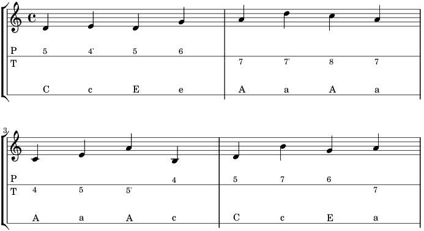
Mesure incomplète, anacrouse
Le mesures incomplètes s'annoncent avec le mot clé \partial suivi du nombre de temps (ici la durée d'une blanche) :
Tablature
\partial:2 p5:4 4' p5:2 6 t7:4 7' 8 7 |
Basses
\partial:2 C c C c E e A a A a |
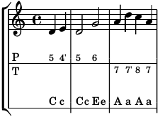
Attention ! Les utilisateurs de Lilypond remarqueront la nécessité d'écrire la durée de l'anacrouse avec le symbole « : » et sans espace. Cette différence est due au fait que dans Tabliato un chiffre correspond à une note. Dès lors la syntaxe classique « \partial 2 » est mal interprétée.
Les liaisons
Les liaisons de prolongation s'écrivent avec un « ~ ». Les liaisons ne sont pas affichées dans la tablature :
t5:4~ 5 p4:2~ 4:4~ 4 6:8~ 6:4 t7:8
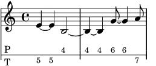
Les liaisons d'articulation et de phrasé s'écrivent avec des parenthèses :
p5 ( 4' 5 ) 6 t7 7' ( 8 7 )
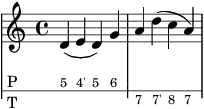
Aller plus loin
Tout le reste du solfège doit pouvoir être utilisé. Je ne l'ai personnellement jamais utilisé ni vu utilisé sur des tablatures d'accordéon diatonique qui sont en général des partitions très simples. Pour écrire des choses plus complexes veuillez vous référer à la documentation de Lilypond.